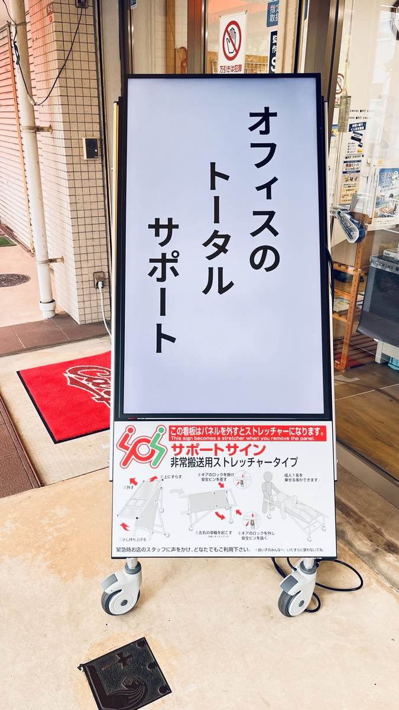
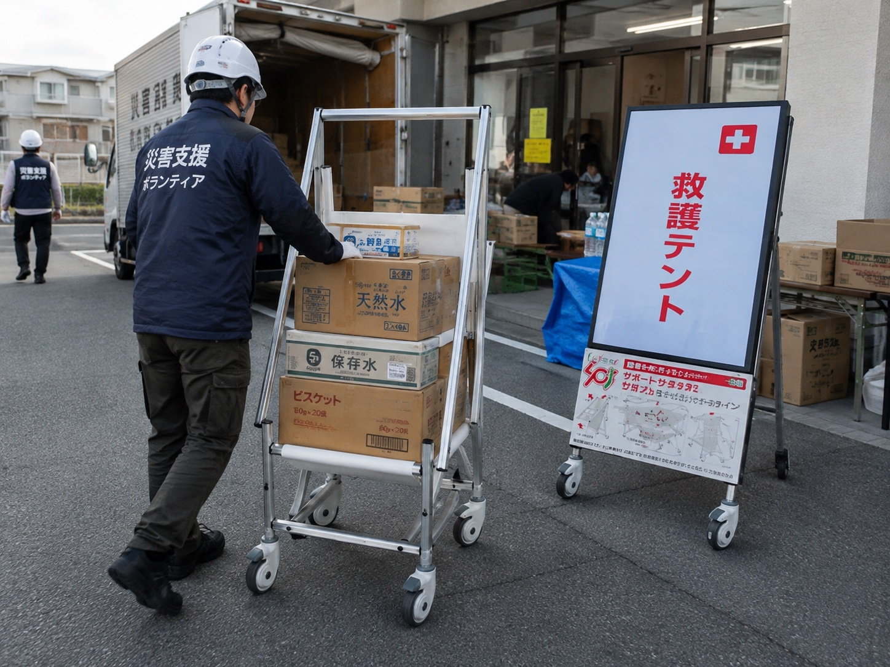

使う場所に、
備えがある。
倉庫の奥ではなく、いつも人が行き交う場所へ。日常的に目にする看板が、緊急時の搬送を支える備えになります。

人が集まる場所にある、一台の看板。
その役割は、情報を伝えることだけではありません。
デジタルサイネージサポートサインは、
案内やお知らせを映す電子看板と、
緊急時の搬送用具を組み合わせた製品です。
普段から目に触れ、日々使われること。
それが、いざという時の備えにつながります。
伝えることも。支えることも。
毎日の景色の中で。

PRODUCT / 実機写真以下は各タイプの使用例です。切り替えると別タイプの写真を表示します。
施設案内、掲示板、自社の取り組み、広告。動画や画像で、必要な情報をわかりやすく届けます。
写真：ストレッチャータイプ／サイネージ状態
搬送時の形態・操作方法は製品タイプにより異なります。
製品の違いを質問する ↗安全対策に、日常の価値を。
情報発信に、もしもの役割を。
一台から、施設の備えを考えます。
倉庫の奥ではなく、いつも人が行き交う場所へ。日常的に目にする看板が、緊急時の搬送を支える備えになります。
施設の安全対策や避難先、企業の取り組みを画面で発信。来訪者や従業員に、日々の活動を届けられます。
施設案内から安全啓発まで、動画と画像で表現。紙の掲示だけでは伝えきれない内容にも活用できます。
運用環境に合わせて放映方法を選択。ネットワーク配信に対応した構成なら、遠隔での表示変更も可能です。
学校では、防災学習や搬送用具の体験にも。生徒自身が伝える内容を考えることで、防災を身近にするきっかけに。
防災用品の「もしも」の役割と、
電子看板の「いつも」の役割。
その二つを、ひとつの設置場所に。
| 役割 | 一般的な電子看板 | 搬送用具 | サポートサイン デジタルサイネージ版 |
|---|---|---|---|
| 日常の情報発信 | 動画・画像を表示 | 搬送用途が中心 | 動画・画像を表示 |
| 緊急時の搬送 | 搬送用途なし | 搬送を補助 | タイプに応じた形態で補助 |
| 日常の置き場所 | 人の目に触れる場所 | 施設の運用により異なる | 情報発信をする場所に設置 |
一般的な用途の整理です。個別製品の仕様や施設の運用によって異なります。

活用イメージ / 公共施設地域のお知らせと、もしもの備えを同じ場所に。
施設案内や地域のお知らせを発信。緊急時には、来訪者の移動や物資運搬の補助に活用できます。
行事の案内や生徒の活動を紹介。防災学習や車いす体験など、日常の学びにもつながります。
安全目標、連絡事項、企業の取り組みを共有。従業員や来訪者が集まる場所で、搬送への備えも兼ねます。
利用案内や地域の情報を発信。人の往来がある、十分な設置スペースを確保できる場所への導入をご相談いただけます。
イベント案内や安全啓発の表示に。救護拠点の案内と搬送の補助など、施設の運用に合わせた活用を考えます。
画像は活用イメージです。導入実績を示すものではありません。設置は通路幅・環境・運用を確認のうえご提案します。
SAFETY, IN EVERYDAY LIFE.
使い方から、情報発信の運用まで。
株式会社ユニオンが、施設に合った
活用方法を一緒に考えます。
設置場所や使い方をご案内。避難訓練での活用についてもご相談ください。
動画・画像の制作から放映方法まで。日々の情報発信をサポートします。
使用状況に応じた確認や交換時期のご案内など、導入後の管理を支援します。
購買管理によるコストカット支援もご相談可能。安全対策に充てる予算づくりを一緒に考えます。
よくいただくご質問
もちろんです。設置できる場所、使い方、費用感など、気になることからお気軽にご相談ください。
ストレッチャータイプと車いすタイプがあり、緊急時の形態や操作は製品タイプにより異なります。用途に合うタイプをご案内します。
43〜55インチの範囲で、メーカーや機種をご相談いただけます。適合する構成と放映方法を、設置環境に合わせてご案内します。
設置環境と機器の仕様に応じた確認が必要です。直射日光や強風が長時間当たる場所は避け、通路の安全やスペースを確保できる場所をご相談ください。
医療機器ではありません。救護活動を補助する搬送用具です。使用方法を確認し、施設の救護・避難計画に合わせてご活用ください。
使い方から、動画や画像の制作、放映までご相談いただけます。ご希望の運用に合わせてサポート内容をご提案します。
「うちの施設にも置ける？」
「どんな仕組み？」「費用はどのくらい？」
検討前のご質問も、歓迎します。